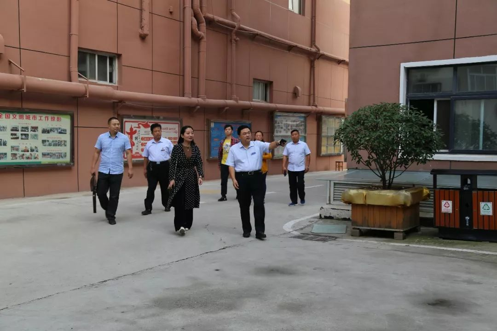
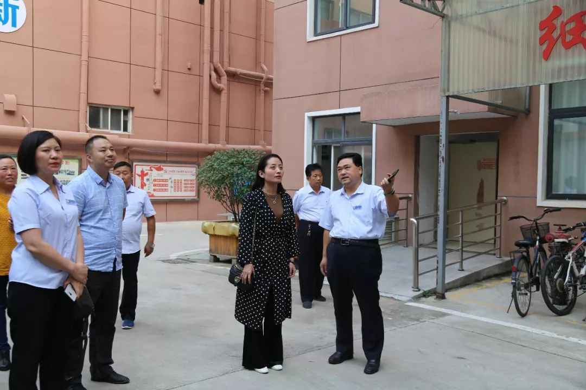
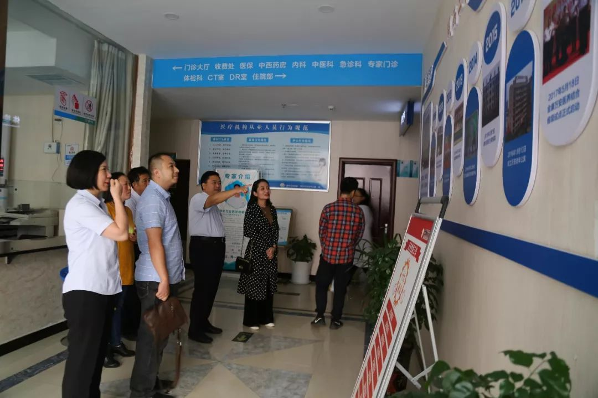
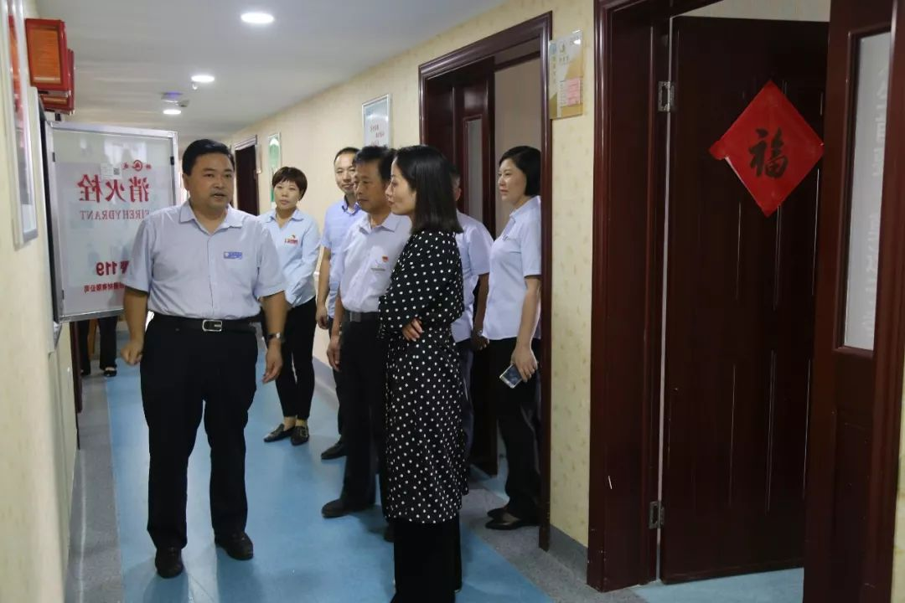
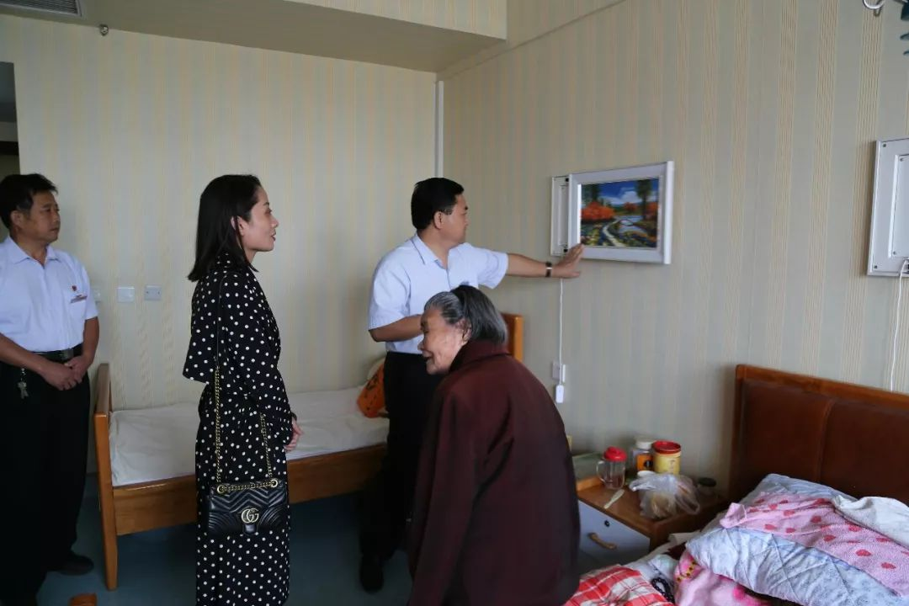
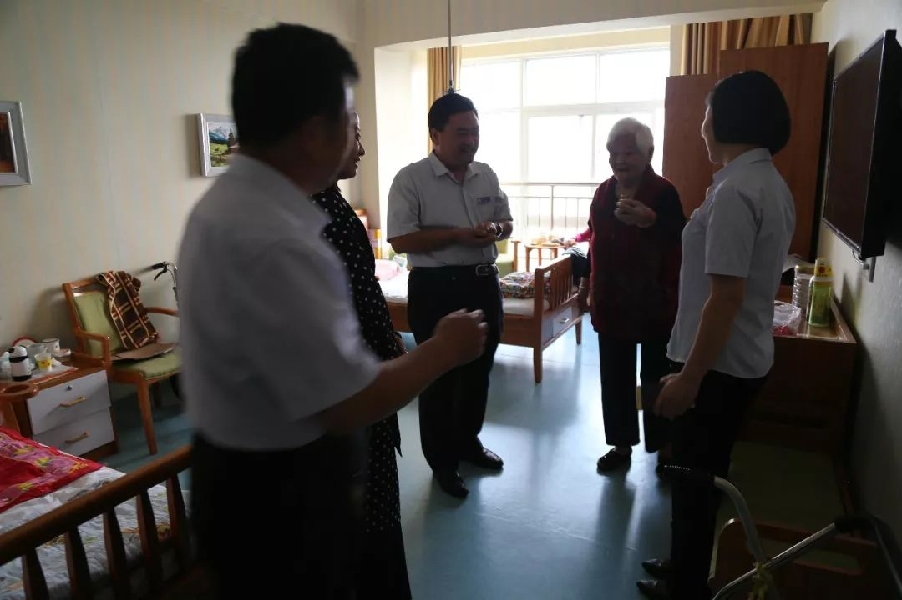
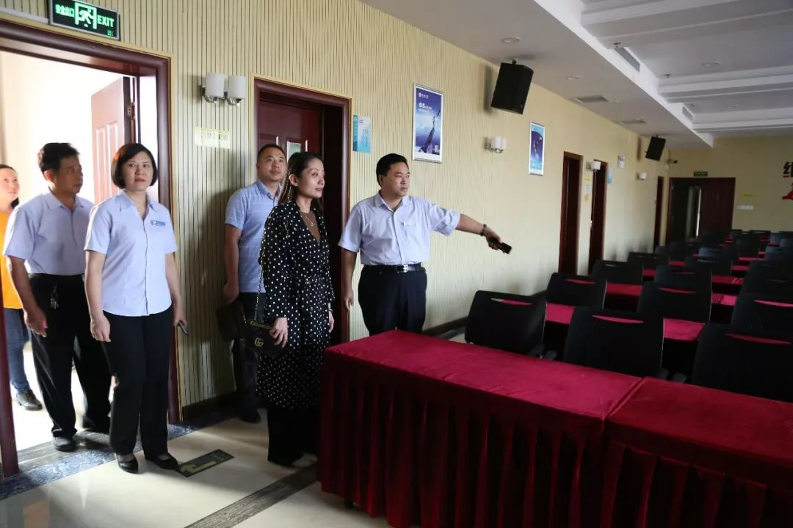
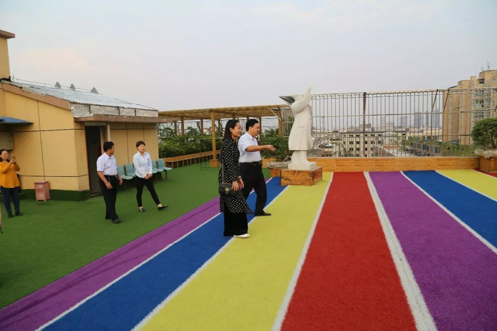
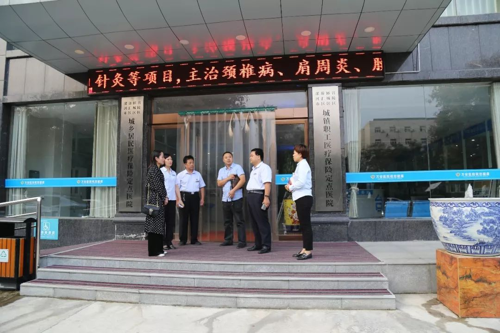

漯河市源汇区民政局一行领导 莅临万安老年公寓视察指导工作
人气: "" 时间：2018-09-24
9月26日下午，漯河市源汇区民政局副局长陈宁、源汇区民政局老龄办主任张沛来万安老年公寓视察指导，院长王卫峰、业务院长银令令、后勤院长杨延顺陪同视察。


陈宁一行在院长王卫峰、业务院长银令令、后勤院长杨延顺陪同下实地查看了万安老年公寓老人活动室、多功能厅、会议室、餐厅及双龙社区日间照料中心等，详细了解万安老年公寓的建设管理等情况。随后，走进老人居住房间与入住的老人们亲切交谈，关心询问老人们的生活起居情况，并祝福老人们身体健康、安享晚年。






在听取了院长王卫峰介绍我院“医养结合”这一服务特色后，陈宁对我院在养老服务方面所做的工作表示肯定，并表示：今后将会继续支持医养结合产业发展，同时也希望在原有工作的基础上进一步探索有利于养老行业良性发展的有效机制，提高老人的生活质量，让老人老有所养、老有所医，继续办出自己的特色，不断增加社会认同感和对老人的吸引力。
